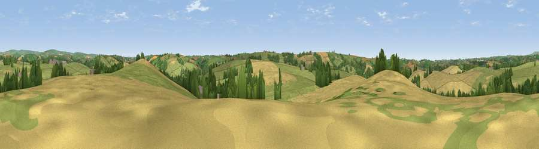

Viewpoint near George Nympton
#20763 in England · top 35% of its area beats it · near George NymptonThe view, rendered

A 360° render of this exact spot computed from the terrain model, tree cover and land cover — summer colours, afternoon light, calibrated against photographs of famous viewpoints. Real trees, hedges and buildings will differ in detail.
The panorama
Grey silhouette: terrain skyline in each direction (720 bearings, Earth curvature and refraction included). Dashed green: skyline with trees (+15 m) and buildings (+8 m) as obstacles. Blue strip: how far the ground is visible on each bearing.
Where the view opens
Wedge length = distance to the farthest visible ground on that bearing (vegetation-aware). Rings at 10, 25 and 50 km.
What fills the view
60% grassland · 31% cropland · 9% woodland ·
Angular shares of the visible panorama (visual magnitude), not map area. Landscape diversity 0.40 (0–1 Shannon).
Key numbers
More beautiful places nearby
The staircase of upgrades: each row has a higher view potential than everything closer. Driving times are estimates from straight-line distance, calibrated against real road routing — check an actual route before setting out.
| Place | Direction | Drive | Score |
|---|---|---|---|
| Viewpoint near Romansleigh | S · 2 km | ~6 min | 61.8 |
| Viewpoint near George Nympton | SW · 3 km | ~7 min | 65.8 |
| Viewpoint near Stags Head | NNW · 6 km | ~12 min | 68.1 |
| Yollacombe Hill | NW · 9 km | ~18 min | 70.2 |
| Viewpoint near Simonsbath | NNE · 13 km | ~24 min | 73.1 |
| Viewpoint near Landkey | WNW · 13 km | ~24 min | 74.0 |
| Codden Hill | WNW · 14 km | ~26 min | 81.3 |
| Lynton Hill | N · 25 km | ~41 min | 82.7 |
50.99443, -3.83565 · source: screening · position refined by local search. Computed location — check access rights before visiting.